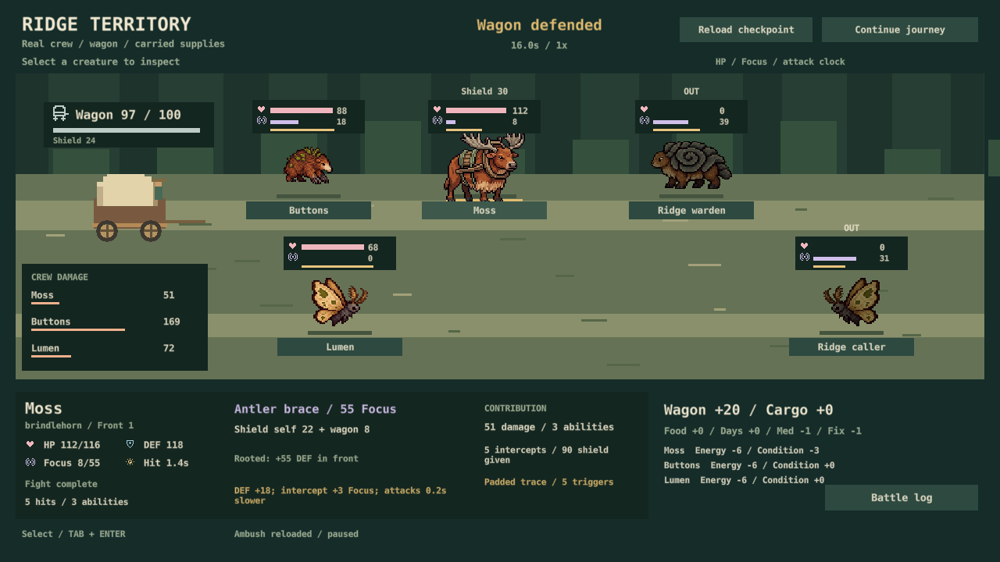
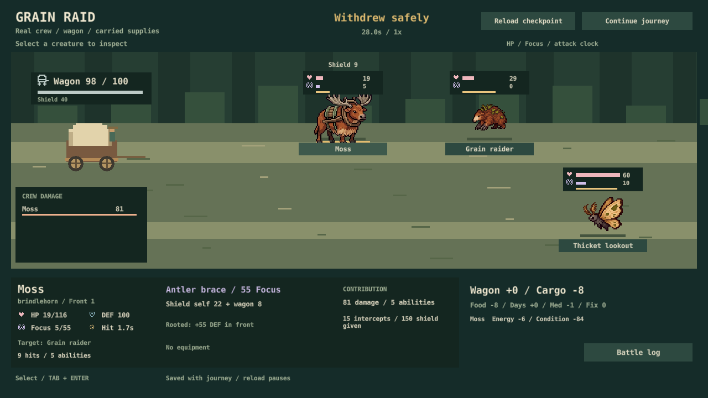
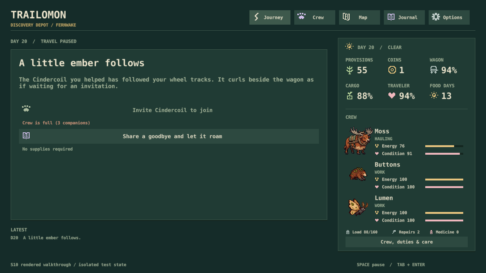
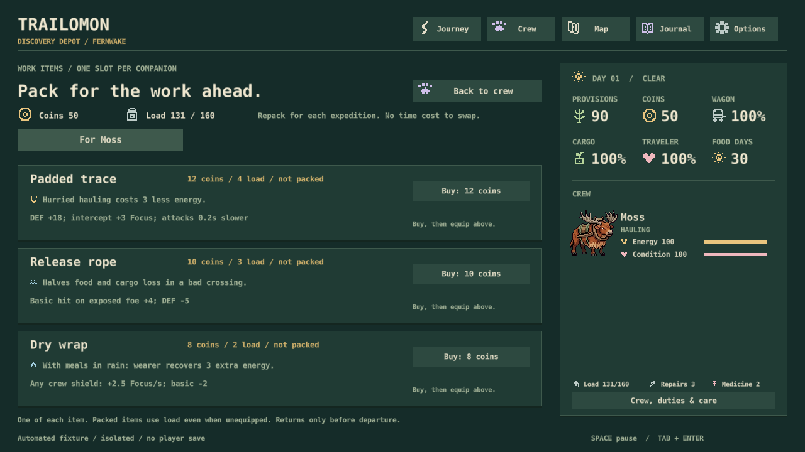
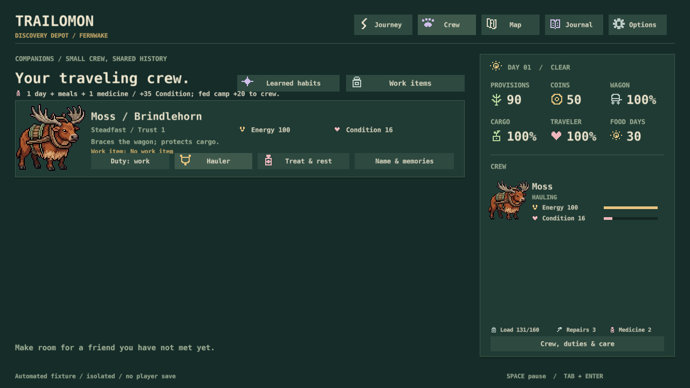
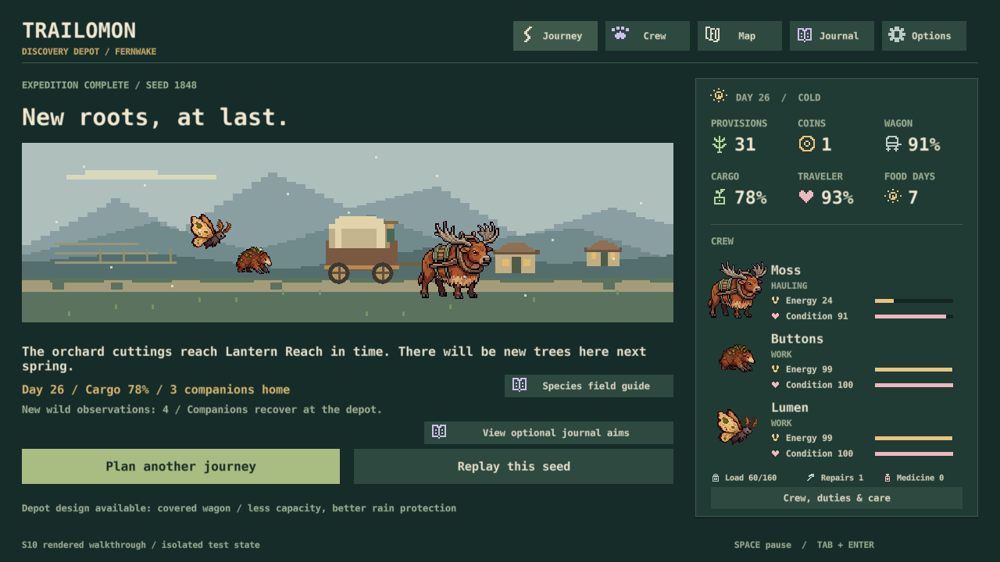
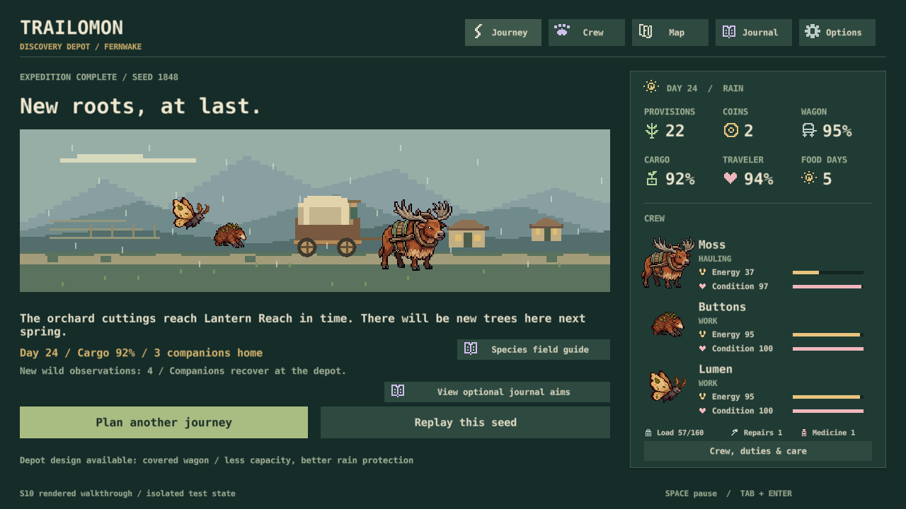

S10 / November 2, 2026
The crew comes together. The first fight is the rough edge.
Two full expeditions completed through the rendered game interface, with travel and combat time advanced by an isolated test driver. Both made delivery and two searches. This is a developer walkthrough, not a physical-input or listening sign-off.
Verdict
The expedition loop holds together. A bad early fight can be recovered from, and a prepared three-creature crew makes combat much more expressive: Moss shields, Buttons deals damage and exposes targets, Lumen interrupts. My design judgment is that the team battle sells the concept better than the solo opening. Real-time enjoyment still needs a hands-on pass.
| Walkthrough | Delivery | Exploration and care |
|---|---|---|
| New-player lens: try solo combat, retreat, recover, recruit; steady until the uplands, then hurry via ridge | Day 26 78% cargo · 31 food 91% wagon · 24 hauling Energy | 2 searches; one empty, one Cindercoil shelter 1 treatment day + 1 repair/rest day |
| Expert lens: feed the first threat, recruit, hurry, equip padded trace, practice, fight the late guardian via gorge | Day 24 92% cargo · 22 food 95% wagon · 37 hauling Energy | 2 searches; Cindercoil and Slatewhorl 1 repair/rest day; battle supplies later |
Both crews grew to Moss, Buttons and Lumen. These are two exploratory runs, not a win-rate estimate or proof that one strategy is best. Different pace, weather, gear and routes prevent isolating a single cause.
What worked
- Recovery fits the trip. After the solo retreat, one medicine day raised Moss from 16 to 71 Condition. A later repair/rest raised him to 91 while fixing the wagon. Two searches still fitted before day 26.
- The team has readable jobs. The late road fight ended in 16 combat seconds. Buttons dealt 169 damage, Moss provided 90 shield, and Lumen interrupted the caller. Medicine and repair supplies kept the wagon and crew ready to move.
- The wilderness commitment is clear. Mossbell says it is the last shop and advises keeping 12 coins for the ferry. Cairn Gate explains ridge wear, hurried cargo loss and the delivery deadline.
- Costs carry through. Retreat, treatment, searches, practice, purchases and battle supplies all reached the expedition state. Reloading the six-second guardian checkpoint resumed paused.

Where the experience is still thin
- Solo combat is a sharp lesson. Moss fell from 116 HP to 19 after 28 combat seconds despite medicine. Retreat then cost eight food, eight cargo and left 16 Condition. The peaceful six-food choice was much cheaper. This is a difficulty finding, not a broken recovery system; no enemy values changed.
- A full crew limits the collection payoff. Helping Cindercoil cost medicine, but its later invitation was blocked by the three-creature limit. The reason was clear; there is still no crew exchange at that meeting. Exploration produced field observations, not a new traveler.
- Prepared combat is brief. Mara practice lasted 14.8 seconds; the guardian lasted 16. Positioning and abilities are legible, but two battles cannot establish lasting variety or Astronarch-level depth. The already-approved symbiotic pairing is the next useful build experiment.
- Exploration competes with delivery. The recovery-heavy trip arrived on the preferred final day. The prepared trip had two spare days. This supports selective detours; it does not establish that searching every stretch is viable.
Solo battle and collection evidence


Already fixed
Treatment: the crew screen incorrectly implied a maximum of +35. It now separates medicine's +35 Condition from fed camp recovery (+20 for new journeys, +8 for older saves), with a short “Treat & rest” button.
Equipment: the travel equipment screen still described the retired combat system. New journeys now show the same effects as wagon combat: defense/Focus tradeoffs, exposed-target damage and shield-driven Focus. Old saved journeys retain their matching descriptions.

Care fix and completed journeys



Verification and limits
154 simulation tests, native saves and UI checks pass. Added native regressions compare displayed care against actual treatment and verify all three equipment descriptions under both combat rules. Four affected screens were rendered and inspected at 1280 × 720. No simulation balance, save format or art changed.
The desktop attempt was interrupted by detected user input on day one. The completed runs instead used the production UI callbacks and combat controller in a hidden release renderer, with an in-memory validated save writer. Decisions were selected by the developer; travel days and combat seconds were advanced by the driver. Neither completed journey forced an encounter or edited resources. This does not test the production travel clock, physical controls, sound, operating-system focus or the old activation crash.
S10 remains in progress for a real-time hands-on journey, physical keyboard, listening and activation reliability. No new YES/NO decisions are being requested here. Existing unanswered choices remain on their original pages.
Source and evidence
Gameplay source: 9b9424bd02fbee9a286d4680ed026db041c5ad4d, Defold 1.13.2. Normal rations, open wagon, fresh Discovery state for each run. The first used meadow/ridge; the second meadow/gorge. All player saves remained separate.
Evidence manifest · Recorded checkpoints · First final state · Second final state · Broader S5 comparison
Next gameplay build: S32's one symbiotic pairing, with explicit tradeoffs and no art overhaul.